We present a system that aids the design of 3D obstacle course games by providing designers with rapid feedback on how obstacles can be solved. Our core contribution is a system for querying for solutions (sequences of player actions) to an obstacle that adhere to designer-specified constraints (e.g., avoid a region, travel through a given waypoint, only perform two jumps, etc.).
To solve a wide range of obstacle designs quickly, we author a high-performance implementation of the GoExplore algorithm for exploratory search, and guide search with an obstacle solving agent trained offline using reinforcement learning (RL). To further accelerate search, the system carries out exploration using a custom GPU-accelerated obstacle course game simulator that generates playthrough experience at nearly 14,000× real time, 60-fps gameplay.
Through design studies, we demonstrate that the use of constrained solvability queries in a rapid design loop is sufficiently expressive to help designers understand ways an obstacle can be solved or why it cannot be solved. We also show how the tool can let designers answer higher-level questions such as identifying undesirable solution paths and assessing the difficulty of solutions. This allows them to pursue new design directions they did not originally anticipate. Human playtesting of obstacles designed using our system confirms that human players indeed play the obstacles in the manner the designers intended.
Designers playtest to understand an obstacle's solvability: the set of movement sequences a player can or cannot use to solve it, and the character of those sequences — their difficulty, their strategies, their diversity. Our system lets a designer ask for this directly. A query specifies a starting region and a goal region, plus a set of constraints that limit the behavior a successful playthrough may exhibit:
Spatial constraints are 3D regions the designer places with standard translate/rotate/scale handles. Multiple waypoints can be chained in sequence, each with its own jump budget. After a query is submitted the system streams partial results back for immediate visualization, plotting both failed and successful attempts as 3D trajectories in the scene — so the designer can see how an attempt succeeded, or why it failed.
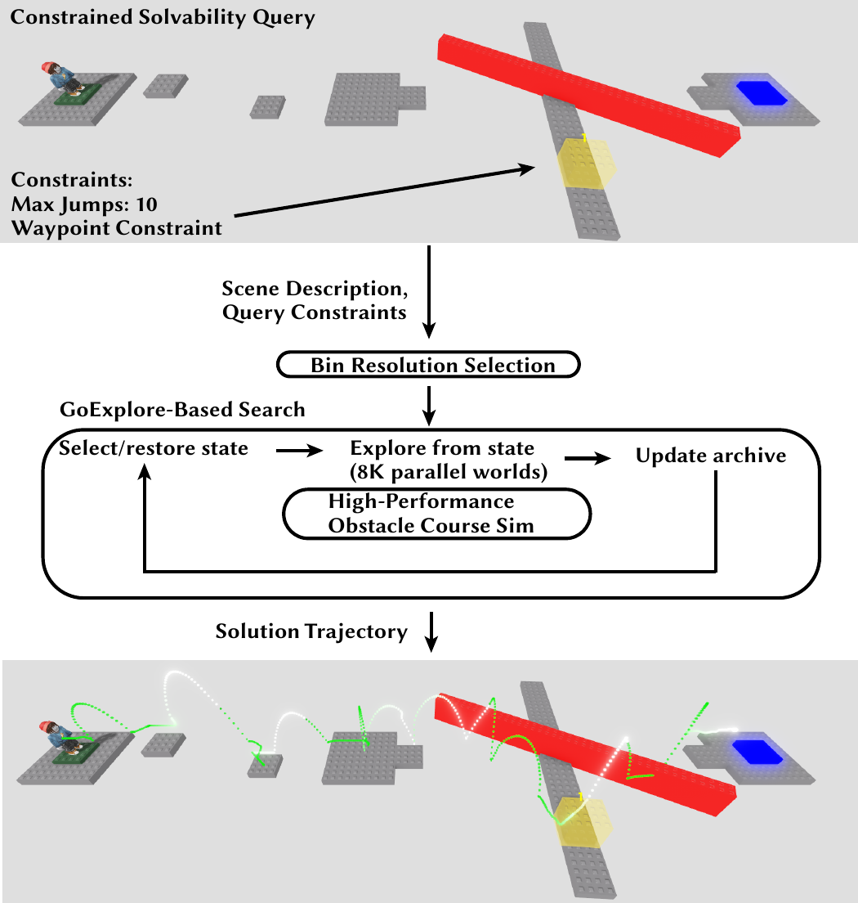
System overview. Queries are submitted from the front-end in Roblox Studio and loaded into our GPU-accelerated simulator. We then run parallel Go-Explore (using our policy exploration) and return the first solution found. That solution is visualized as a trajectory in Roblox, and can be replayed synchronously with the motion of the level.
To be useful inside a design loop, the query engine has to return playthroughs in seconds and work on the diverse, complex obstacles designers actually build. Two components make that possible.
We first tried training a general obstacle-solving agent on a large collection of procedurally generated obstacles, but the resulting policy often failed on novel human-authored obstacles — human creativity reliably produces out-of-distribution content. Fine-tuning per query was also impractical within a latency budget of tens of seconds. So we build the engine on Go-Explore, a stochastic exploratory search that repeatedly restores a previously visited simulator state (go) and rolls out from it (explore).
We extend it in two ways. Query-dependent binning discretizes state by player XYZ position, elapsed time, jumps taken, and interactable object positions — allocating the highest resolution to the X and Y axes, since obstacle courses demand precise lateral movement, and spending bins on the time, jump, and object dimensions only when the query involves moving objects, limited jumps, or interactables. Bins closer to the goal, or that have satisfied a waypoint, are upweighted during selection.
Go-Explore with Policy Selection (GE-PS) changes how we explore. The first time a bin is selected after being discovered or updated, we roll out our pretrained RL policy for the whole exploration step; every subsequent selection of that bin falls back to default random exploration. This exploits the policy's skills wherever the search meets structures resembling common obstacle course idioms, and degrades gracefully to brute-force random search wherever the policy fails to make progress.
The designer works in a standard game engine editor (Roblox Studio), but playthroughs execute in a separate GPU-accelerated simulator that runs an approximation of the game at over 800K aggregate game steps per second — nearly 14,000× real-time 60 fps gameplay. Query constraints are compiled into the simulation itself: waypoints become blocks that activate the next stage of the chain, avoid regions become damage blocks, and jump and time limits become counters that filter the action space when exhausted.
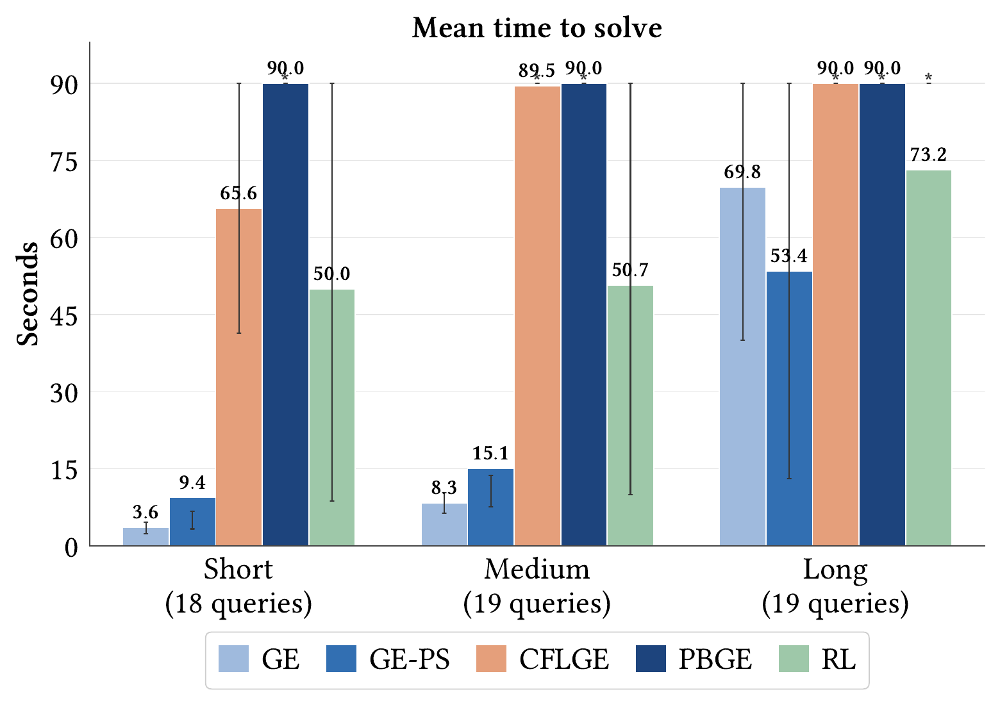
Query performance. Mean time to solve (with inter-quartile range) for five methods across 56 solvability queries logged from our design studies, grouped into tertiles by Go-Explore's time to first solution. On long queries our policy-selection strategy (GE-PS) solves more queries than baseline Go-Explore (GE), a >15 s reduction in average solve time, at minimal overhead on short and medium queries. Both GE and GE-PS outperform Cell-Free Latent Go-Explore (CFLGE), Policy-Based Go-Explore (PBGE), and a pure RL policy rollout (RL). Queries exceeding the 90 s budget are terminated and counted as 90 s.
The designer intends for the player to ride a thin platform, repositioning to fit through gaps in a series of walls. A first query confirms the intended solution exists — but also surfaces a second one: the first barrier can simply be jumped over. That runs counter to intent, so the designer raises the wall and queries again; no solution comes back, so the edit worked. Finally they use avoid and waypoint regions to ask whether the wall can be jumped around. It can — but that route is counterintuitive to a new player and mechanically demanding, so the designer keeps it.
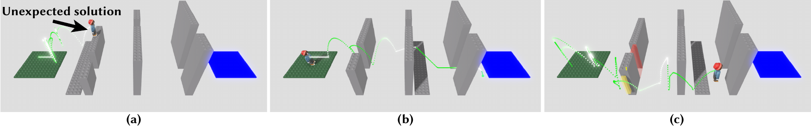
Design study. Solvability feedback helps the designer identify and remove an undesirable solution. (a) The initial design supports a solution that jumps over the wall instead of passing through its gap. (b) The designer raises the wall so it cannot be jumped over. (c) The designer verifies an alternate solution — jumping around the wall — for experienced players.
We recruited four external designers — a professional game developer with games research experience, a professional developer with 19 years of design experience, an enthusiast designer specializing in experimental games, and a professional independent developer working on 2D platformers. They used the system to verify desired solutions, discover and prohibit undesired ones, inspire level edits, and acclimate to an unfamiliar 3D creation platform. Two noted that rapid, in-progress trajectory visualizations were crucial to their process.
Designer 1 set out to build a "pixel-perfect platformer." The system showed their initial design was unsolvable because the goal platform sat too high; after an edit made it solvable, a later query revealed an unintended route that skipped their lava ring obstacle entirely. Shrinking the goal and enlarging the ring discouraged it, and a waypoint constraint on the top platform confirmed the intended gameplay end to end. They valued being able to evaluate play on obstacles harder than they could comfortably playtest themselves — and to "press a button and rapidly confirm that a design was still solvable" after each edit.
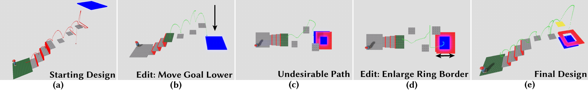
External Designer 1. Our system allowed this designer to (a) see why their design was unsolvable, (b) make an edit resulting in a solvable obstacle, (c) see an alternate solution they did not know was possible, (d) make an edit discouraging that solution, and (e) verify that their final design supported their intended solution.
Six college-age playtesters attempted obstacles built with the system. Each first tried to solve the obstacle; on success they were asked to find a harder solution if one existed. Across three design studies, human players solved the obstacles along the paths the designers intended — so designers can trust that the feedback reflects real human play.
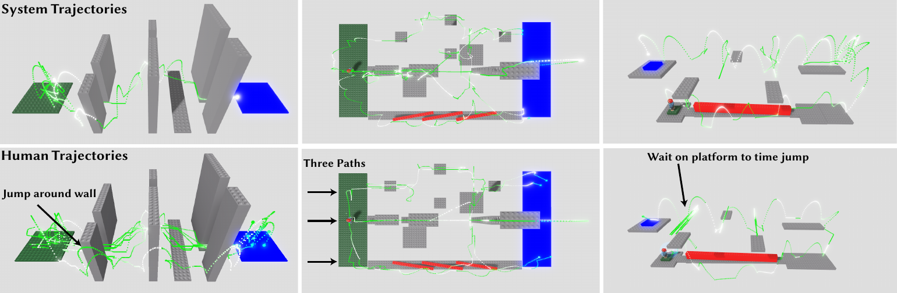
Human playtesting. Across three design studies, feedback from our system allowed a designer to create obstacle courses that supported their desired solutions (top row): a solution passing through the wall gaps and one jumping around the wall (left), a design with multiple solution paths (center), and a design where players time jumps between platforms to balance the difficulty of the preceding section (right). All of these solutions were reproduced by human playtesters (bottom row). On the rightmost obstacle, playtesters agreed the second section was much easier than the first — exactly as the designer intended based on trajectory feedback.
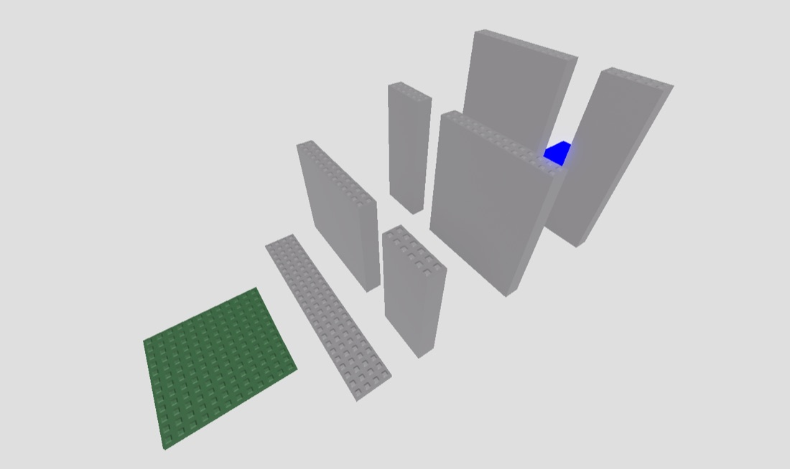
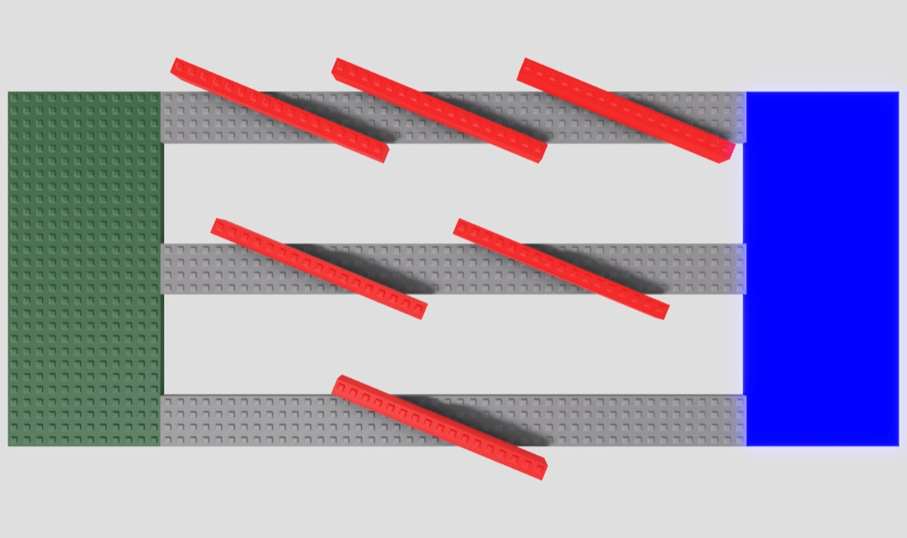
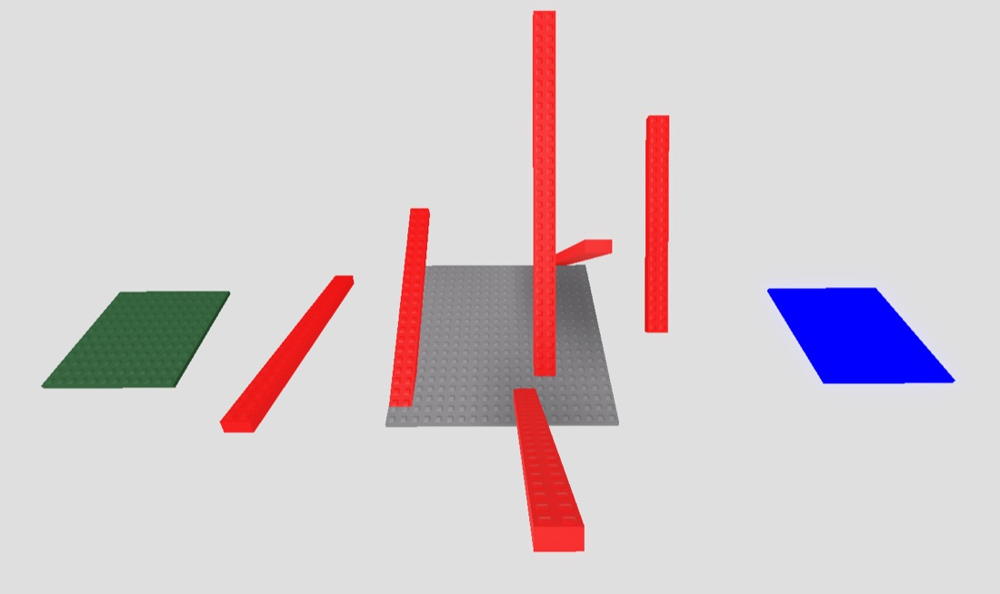
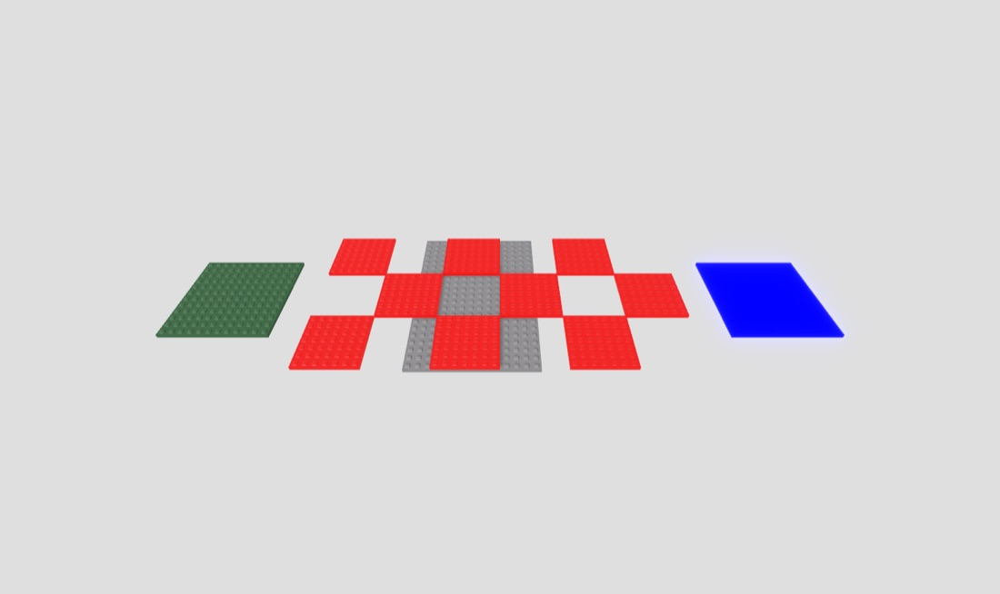
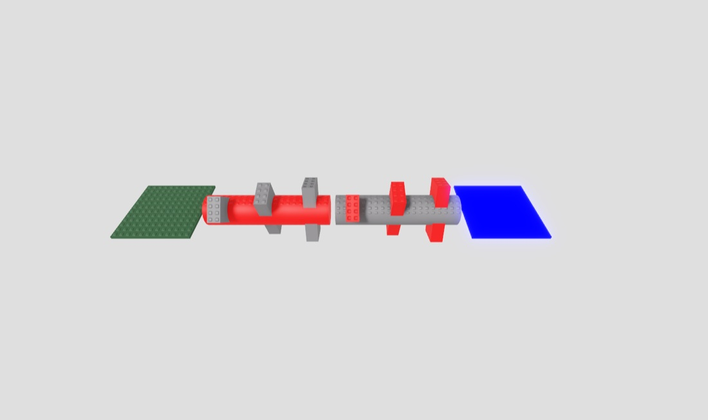
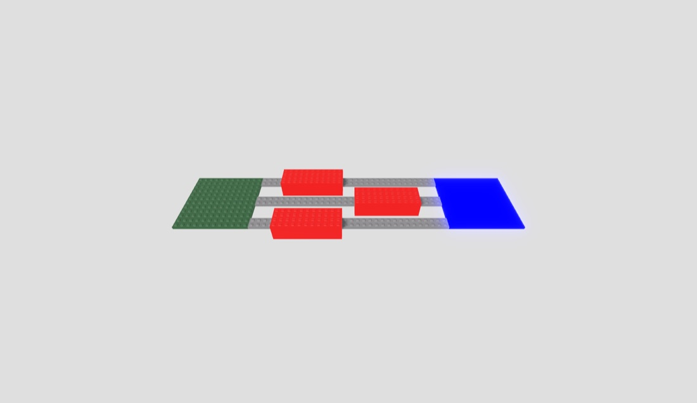
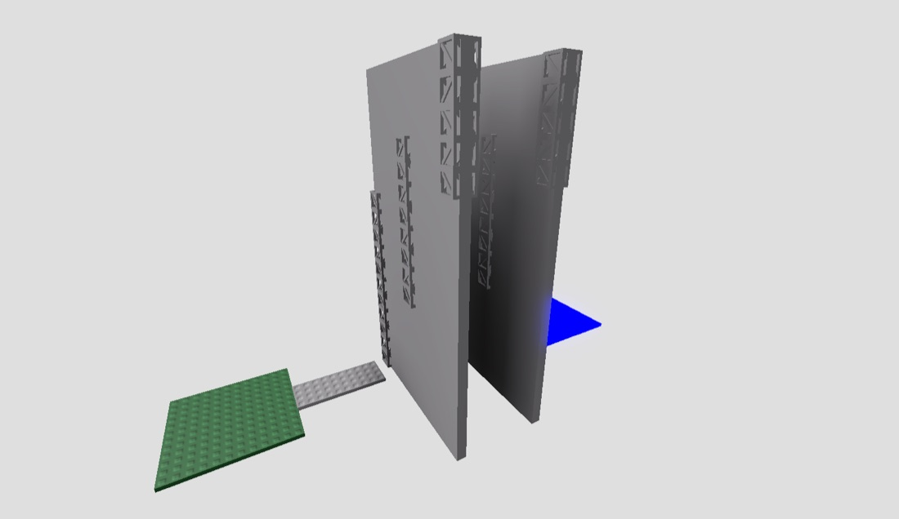
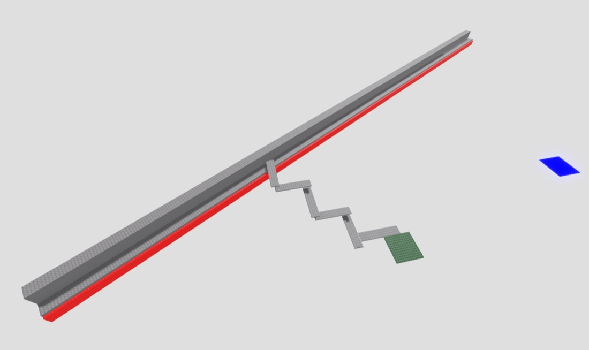
Constrained solvability queries let designers immediately observe how their design decisions shape play. In our studies designers used that feedback to edit the obstacle toward their goals — but knowing the full space of potential solution strategies, or the likely failure modes, could also drive player assistance systems, or breadcrumbs that lead players toward a particular solution.
Because players traverse obstacles segment by segment, complex obstacle course games are usually composed of largely independent obstacle designs. Once the segments exist, the designer faces global questions: obstacle sequencing and difficulty progression, and the visual communication of function — making dangerous things look dangerous, shaping an obstacle so it suggests its own solution. A tool that accelerated that process, especially by automatically evaluating the solution an obstacle suggests to a player on first sight, would be fascinating.
With AI-generated content becoming ubiquitous, we expect an acute need for tools that help designers turn abundant 3D content into compelling experiences. We hope this work encourages more efforts to help creators understand and evaluate how their design decisions affect gameplay.
@article{majercik2026solvability,
author = {Majercik, Zander and Zhang, Sharon and Wang, William and
Karmali, Tejan and Zhou, Fangjun and Yuan, Yucheng and
Chou, Jean-Peic and Agrawala, Maneesh and Fatahalian, Kayvon},
title = {Providing Rapid Design Feedback for 3D Obstacle Course Games
Using Constrained Solvability Queries},
year = {2026},
}